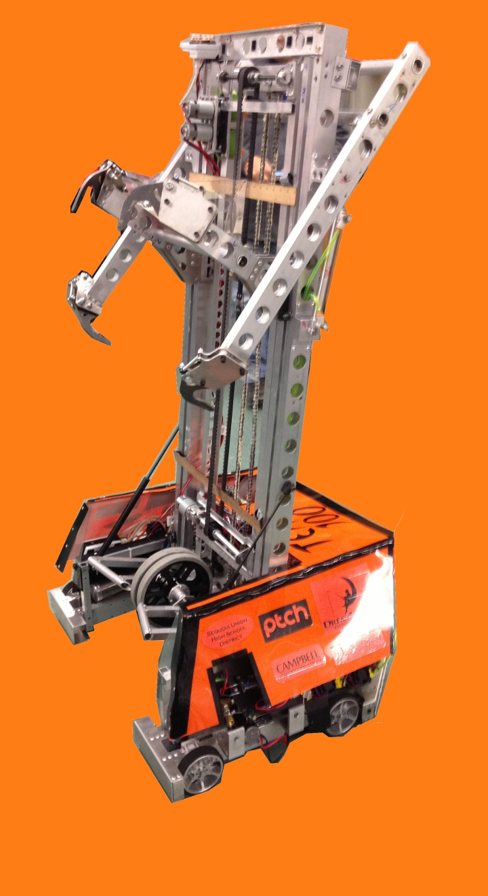

Inspiration: The robot ha tusk-like protrusions, like a walrus
Weighs 112 pounds
6 wheel drive, with the front 2 wheels as omni-wheels for added mobility, belt driven by VexPro shifters
Designed to intake and and shoot the 24' ball
Shooting mechanism exerts up to 200 pounds of force and consists of 4 springs and an archery trigger
Worm gearbox and steel cable pull the trigger to fire the ball up to 50 feet
2013 Game: Ultimate Ascent
2013 Robot: OrangaHang
Model: Mk III
Model: Mk II
Model: Mk I 
Inspiration: The robot climbs and hangs off pyramids, like an orangutan and is orange.
Weighs 113lbs
4 wheel drive West Coast Drive, with ball casters at the back corners of the robot
Designed to climb 60 feet up the pyramid
Four hook setup, designed to be extremely stable while climbing
2 wheel shooter
4 frisbee storage
Shoots a frisbee every .75 seconds
Fed by human player by running the shooter backwards
Tilts to change shooting angle
2012 Game: Rebound Rumble
2012 Robot: The Kraken
Inspiration: The intersection of the ball intakes with the transport belt is called the bermuda triangle, and all the belts look like tentacles.
Catchphrase: Release the Kraken!
weighed 119 pounds
Ball-intakes on both sides and a 360-degree turret-shooter at the top
The programming is in C++
Built a bridge-pusher to lower bridge
6 wheel tank drive with the middle wheels lower to lower turn friction
2011 Game: Logomotion
2011 Robot: G-Wrath
Inspiration:The long arm/neck makes it look like a giraffe.
weighed 115 pounds
4 motor drive
6 wheels with middle 2 lowered for lower friction turns
A unique feature of G-wrath is that its arm could be lowered in the front or back of the robot. another feature was that the shoulder motor and worm gear were onthe arm and that assembly rotated around a fixed gear on the robot
Springs and gas shocks counterbalance the weight of the arm
Pneumatic wrist allowed head to store within the frame
The Minibot was deployed on a drawer slide powered by a pneumatic cylinder
When the Minibot reached the pole it was held in place by magnets. Retracting the deployment arm triggered the power button.
To detect the distance from the pole tower, we used Sharp Infrared Proximity Sensors GP2Y0A21YK
The head allowed for manipulation by using 2 independently controlled rollers. One on
the top “jaw” and one on the bottom “jaw”.
The head could suck in a tube by driving the rollers forward and spit it out by driving the rollers backward. It could also rotate the tubes up and down by driving the rollers opposite each other.
A ring of LEDs around the camera for use with the retro-reflective
pneumatics were used for multiple subsystems
Drive train gear shifting, one solenoid valve and piston for each side of the drive train
Minibot deployment (move in, move out)
Wrist deployment - one position for stowing head within robot frame, and the other position for normal tube hanging operation
2010 Game: Breakaway
2010: Hammerhead
Inspiration: The robot is shaped like the dorsal fin of a shark and it has a hammer-like kicker on the front.
4 motor tank drive with omni wheels in the back
Hanging mechanism was a hook velcroed to the end of the deployment pole. The pole would come up, grab onto the rung, and retract. While the pole retracted, the velcro came off and we would winch ourselves up to the top.
Winch used a ratchet, it allows movement in one direction but prohibits movement in another.
Able to hold on to ball while swiveling. Creating a dribble.
Used vision to detect the ellipses of the targets over the goals.
We used the size of the largest circle (in pixels) and estimated the distance to the goal to give us the desired kicker power
The formula seems to be 0.05/(# pixels of the radius of the largest circle) the result limited to lie between 0 and 1 formed the demand for the kicker motor.
Kicker arm rest position is at about 10 oclock, swings clockwise, and hits the ball at about 7 oclock
2009 Game: Lunacy
2009: LunaBeast
Inspiration: The robot is beastly and played the game Lunacy.
Fate: Disassembled due to lack of space
Robot that fires large quantities of game pieces
Can hold 12 game pieces and we have a shooting accuracy of about 85%
To hold the game pieces, our team designed a two-channeled cartridge
2008 Game: Overdrive
2008: Ball Frog
Inspiration: The name was a play on words of the Bullfrog, because it held a ball in its mouth, making it look like the large inflated neck of a Bullfrog.
Manipulator able to not only hurdle the large trackballs, but which would also be able to place the trackball on the rack
Was programmed in autonomous, to make it around the track, crossing up to four lines
Could get ball off overpass
elevator to lift and lower balls
2007 Game: Rack N' Roll
2007: Tube-A-Saurus-Rex
Inspiration: The robots head, the claw/sucker, looked like a mouth, and was then painted with dinosaur teeth.
Fate: Disassembled due to lack of space
Similar to G-Wrath
sucker, which consists of two motors and two rubber belts
Applied constant pressure to the tube in order to easily suck up and spit out tubes.
Claw weighed at least 10 lbs
Instead of the traditional one-pole arm, we welded three metal tubes into triangle shape to give the claw maximum support
This arm is connected to the tower, which behind its plastic sheets hides a triple–layer electronics cake, designed to take up as little space as possible
Blend design features from both the tank-drive and the kit-bot
High shooter mounted on a turret
Balls would be stored in a large bin and then lifted up a conveyor to the turret
All gears used in the transmissions were all cut from straight-cut steel spur gear stock, 20 diametrical pitch, 20* pressure angle
Housing and structure material 6061-T6 aluminum
Six-wheel-drive skid-steer layout. For wheels, 6” Skyway Caster wheels would be used in conjunction with the hub-kits provided by FIRST in the kit of parts.